← 返回阅读库 · 原论文目录
论文讲解阅读文档 · 新模型 · v073
Point Transformer[2012.09164]
视频时长 00:11:52；讲解文字 5,266 字符；提取讲解画面 27 张。按视频原顺序阅读，每段文字保留时间戳。
文字来自整段视频的自动语音转写，按自然停顿分段，并与 PPT / 论文页面 / 演示画面对齐。未将讲解压缩为摘要；术语、数字和口述公式请结合画面及原论文核对。 阅读稿已校正规范部分明确术语误识别；原始逐字稿和每处修改记录另行保留。
讲解画面为源视频截图（640×360），不是可编辑 PPT 文件。全片按每秒 2 帧扫描内容变化，逐步展开页保留；连续动画保留代表画面。清晰度受源视频限制。
下载完整资料包 · 含离线 HTML、PDF、Word、全部 PPT 画面和字幕。
原论文与材料
Point Transformer · 下载完整 PDF（11 页）
按时间阅读
00:00:00–00:00:22 · 画面 001
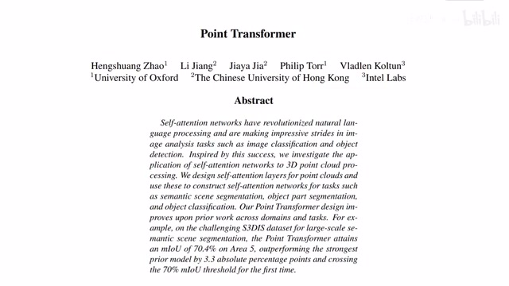
00:00:00–00:00:22 · 画面 001大家好今天我们来介绍 Point Transformer 这篇论文就是把 Transformer Self-Attention 机制和 Point Cloud 点云数据的处理结合起来然后发现它们两个相性还是不错那么这里注意还有一篇论文也叫 Point Transformer 它是由德国的研究者提出的总之这是两篇论文大家注意区分那么在今天的视频中我们会首先简单介绍一下点云数据然后和它的处理
00:00:22–00:00:48 · 画面 002
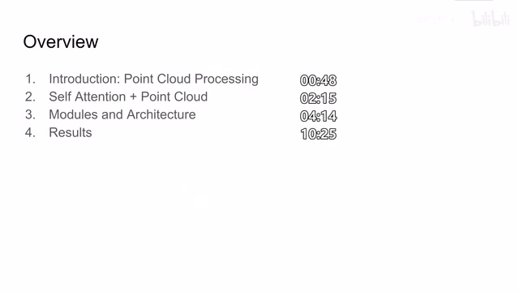
00:00:22–00:00:48 · 画面 002随后呢是本文提出的 self-attention 结合 point cloud 哎怎么样把它结合起来再就是呢作者针对不同的任务比如说像语义分割像这个模型的识别我们使用不同的网络结构然后这个网络结构中呢有不同的模块那么这里面是什么样子呢那么最后呢是作者汇报一些结果那么首先来看点语数据呢它区别于像我们的视频啊图像这些数据
00:00:48–00:00:49 · 画面 003
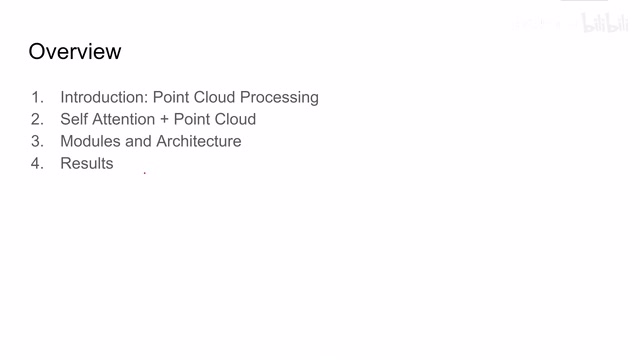
00:00:48–00:00:49 · 画面 00300:00:49–00:02:16 · 画面 004
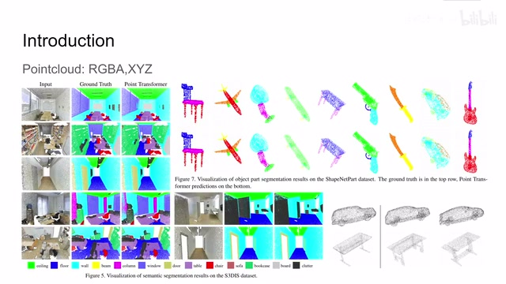
00:00:49–00:02:16 · 画面 004你比如说我们在表达视频或者图像的时候呢就是用 2D 或者是 3D 的这么一个矩阵的形式一个就是像素点的值排列起来就可以了但是点语数据呢因为我们要记录这些点在空间中分布的范围它就没法直接的像我们记录图像那样来表达了那么一般呢我们在计算机中呢都是用这种形式就是这个点的像素的值然后呢和它在空间中的位置这一串坐标呢构成了一个点信息那么一个点元文件中呢有成千上万个点那构成的像这样的场景呢你把它绘制出来呢就是这样子的那么当然有的时候呢我们甚至没有这个 RGBA 比如说你从一般的激光雷达里面拿出来的数据呢它就是 XYZ 这样的形式那么在此基础之上呢我们要做比如说像这个语义的分割物体的部件的分割物体的识别等等等等在机器人学的领域中呢还是非常常见的
那么本文的核心思想呢其实就是用 Transformer Self-Attention 这个机构呢去帮我们在这些点云中点云它也是一个很高维度的信息密度很低的这么一种数据嘛我们能不能使用 Transformer Self-Attention 来帮助我们提出一个好的 feature 来来解决我们下游任务的一些困难那这个呢就是本文的出发点那么这里我们首先看到作者是怎么样把 self-attention 和点云数据给它结合起来的这里我默认你已经熟悉了 self-attention 它的机构了如果你对这方面不了解非常推荐你去看我们之前介绍 self-attention 的这个视频对于一个点云数据来说它区别于图像中的像素点它的输入不仅会包含描述这个点的 feature 这个 X 这里就代表一个点的 feature 还要包含这个点它在空间中所在的位置就是这个坐标 P
00:02:16–00:03:53 · 画面 005
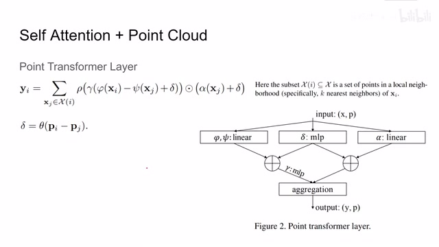
00:02:16–00:03:53 · 画面 005那么我们要做 self attention 那必然呢就要先提出 query key 和 value 来那么对于任意一个数据点 xi 来说首先呢我去找它的 kn 也就是离它最近的 k 个点这 k 个点呢它们组成了一个集合是这个 capital xi 然后呢我要计算 xi 这个点和它的邻居的相关的这个 attention 的值把它们加起来呢作为我们的 point transformer 在这个 xi 这个点上它的输出那么具体我们怎么样计算这个 attention 呢我们看到首先这 xi 把它送到 query network 里面然后呢 xj 是它的邻居送到了 key network 里面得到 query 和 key 之后呢它们两个做差然后呢加上我们的 position evaluate 这个部分呢再送到 mlp 里面就是我们 attention 产生的权重那么右边这一路呢我们的 value 加上 position evaluate 就是我们右边的这个值最后呢我们把左边这个权重归一化
这个肉呢就是 softmax 再来做一个 normalization 然后呢乘上我们右边这个 value 就得到我们的这个 attention 了那么你对点语中的每一个点都做这么一套操作这个呢就是 point transformer 那么你可能已经注意到了在一般的 selfattention 里面呢我们只把这个 positional encoding 加到 query 和 key 里面那么在这篇论文中呢作者实验发现我如果把这个 positional embedding 加到这个 value 这个值里面哎他能够改善性的
00:03:53–00:03:54 · 画面 006
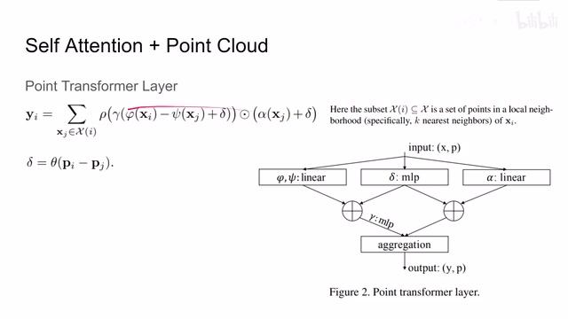
00:03:53–00:03:54 · 画面 00600:03:54–00:04:18 · 画面 007
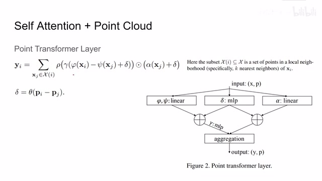
00:03:54–00:04:18 · 画面 007这个呢是本文发现的有趣的地方好的那么我们介绍完这个 Point Transformer Layer 呢我们就可以看到整个网络的结构了这里呢作者研究的是 Semantic Segmentation 也就是语义分割给出这么一个场景的点云呢我们希望我们的模型呢把里面各个物件呢给它分割出来还有呢就是这个 Classification 就是给我们一个模型的点云呢把它区分一下这是什么东西那么对于这个 Segmentation 来说呢
00:04:18–00:04:26 · 画面 008
00:04:18–00:04:26 · 画面 00800:04:26–00:04:27 · 画面 009
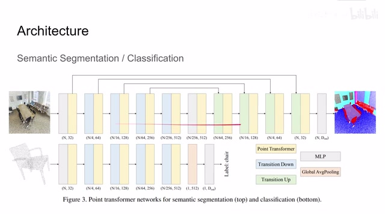
00:04:26–00:04:27 · 画面 00900:04:27–00:04:35 · 画面 010
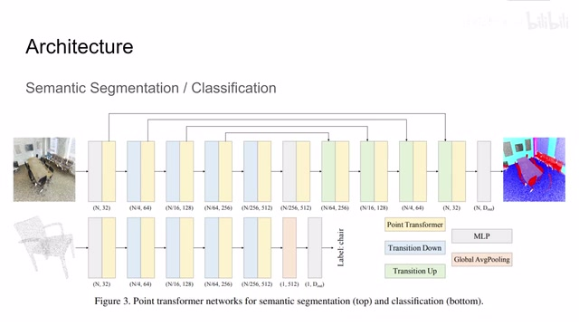
00:04:27–00:04:35 · 画面 01000:04:35–00:04:36 · 画面 011
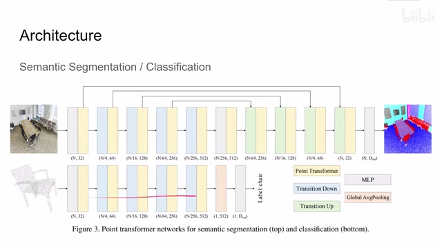
00:04:35–00:04:36 · 画面 01100:04:36–00:05:06 · 画面 012
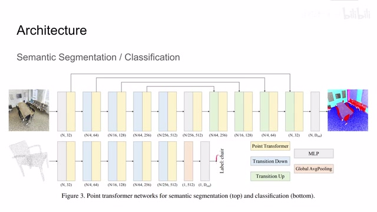
00:04:36–00:05:06 · 画面 012你看到这个连接其实非常熟悉了它就像我们的 unet 一样它中间有 skip connection 它的优点我就不在这里重复了那么看到这里假如原始的图像有 n 个点那么经过第一层它保留着 n 个点每一个点产生长度为 32 的 vector 作为它的 feature 那么在下一层我们这里做了一个降采样这样点数变为原来的四分之一但是每个点的 feature 的深度加长了
00:05:06–00:05:07 · 画面 013
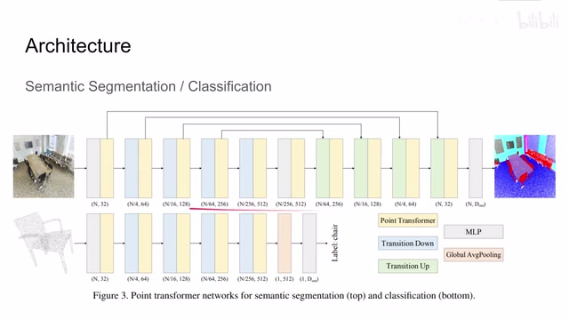
00:05:06–00:05:07 · 画面 013这种设计思路呢就是借鉴了典型的 CNN 的设计的思路那么同样的呢我们将采样加上它的 feature 这样一层一层到最底层然后呢后面呢我们再一层一层的把它升采样回来最后呢再用 MLP 把这个 32 倍的 feature 变成最终的输出也就是说每一个点它归属于哪一类的物件那么最终呢就会输出这样的结果这里呢你可以看到这个 point transformer 呢是用在了所有 MLP 后面
00:05:07–00:06:11 · 画面 014
00:05:07–00:06:11 · 画面 014那么再看下面这 classification 的任务呢它其实就像是 U-Net 的前半边对吧也是随着我们点的数量的减少我们每个点的 feature 呢在不断的加深最后呢这有一点不同的是我们把所有的 point 给它做了 poolingpooling 之后呢我们再做分类这样子呢就直接的把我们的物件识别出来了那么下面呢我们具体来看这个网络中的每一个模块这些矩形代表什么意思吧主要呢就是这个 point transformer transition down 和 transition up 加 mlp global average pooling 这些东西大家都是非常熟悉了那么首先我们看到这个 point transformer block 我们再回忆一下我们的一般的 transformer layer 呢它是 msa multi-head self-attention 加上 mlp 就结束了中间呢有 skip connection 有 layer normalization 等等等等那么在本文中呢我们的 block 呢显得有一些不一样你可以看到呢当我们输入一个 feature 和它的 position 之后呢
00:06:11–00:06:41 · 画面 015
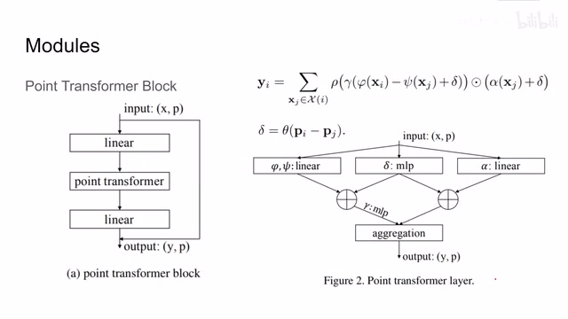
00:06:11–00:06:41 · 画面 015我们直接有一个 skip connection 连到它的输出上然后呢这个输入呢先过 linear layer 送到我们的 point transformer 里面它的操作呢就是这边这一块操作我们之前已经介绍过了这个输出之后呢再送到一层 linear layer 里面然后呢跟我们最开始的这个输入相加得到我们输出这个呢是本文提出的 point transformer block 那么再看 transition down
00:06:41–00:06:42 · 画面 016
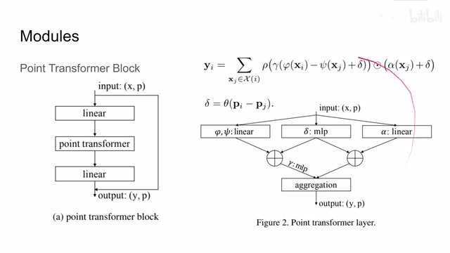
00:06:41–00:06:42 · 画面 01600:06:42–00:06:56 · 画面 017
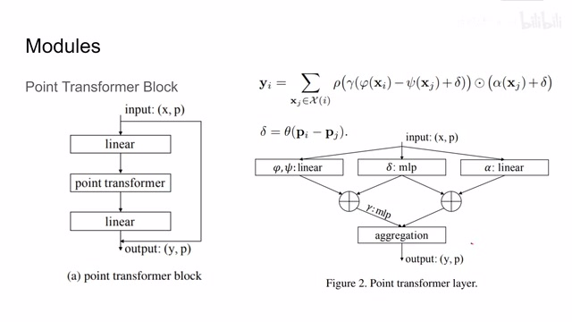
00:06:42–00:06:56 · 画面 01700:06:56–00:08:56 · 画面 018
00:06:56–00:08:56 · 画面 018transition down 的任务就是把我们原来有 n 个点的 point 变成 n 除以 4 这样子一个降采样的一个过程这里我们看到我们输入 p1 个 point 每个 point 它有 x 的 feature 那么首先做了 farthest point sampling 把 p1 个 point 变成 p2 个 point 这个 p2 是远小于 p1 那么什么是这个 farthest point sampling 它的简单的思路就是我随机选一个点开始作为我 sampling 之后
作为我采样要保留的一个点那么我计算其他的所有点到这个点的距离选择距离已经 sample 这个点最远的这个点比如说这里呢它是 S1 我们把它呢加到这个集合里那么现在这个集合呢就变成了 S0 S1 有两个点那么然后呢我们重复下去再计算在集合外面的点距离我们现在这个集合最远的距离的点是哪一个然后呢把这个最远距离的点加到我们的集合里这样子不断的重复呢直到我们有 n 个点达到我们想要的采用的数量了那么就结束了这里呢有两个小细节比如说一开始呢我们这个点的选择呢你可以选在靠近这个点云的重心的位置这样它每次出来的结果呢会比较稳定那么第二个呢就是我们关于距离的度量你针对不同点云在空间中的分布呢你可以选择不同的距离度量那么当然最常用的在三维空间中的就是欧式距离嘛那么回到我们这个传辑振荡
我们通过这个 sample 里呢把 P1 的点呢变成了 P2 的点那么与此同时呢我们对 P1 中所有的点呢它的 feature 呢经过一个 MLP 这个 MLP 呢输出的就是 P1 个这个 vector 但是呢因为我们最终只输出 P2 个点所以呢我们要做一个 pooling 这里呢使用 KNN 就是找到 P2 这个集合里面的这个点它最近的几个邻居然后呢把这几个邻居的 feature 拿出来看一看做这个 max pooling 得到这个 feature 呢就是作为 P2 这个点它的对应的 feature 我们这里叫 Y 那么这个呢就是 transition 到它的过程那么下面呢我们再看到 transition up 这里呢我们假设有 P1 个点这个点呢是 P2 它的子集就是说现在我们 P2 的容量呢是远大于 P1 的我们现在呢我们现在呢是要把这两个点云重新合并成 P2 然后更新它们的 feature 这里呢我们看到首先把输入的点云都过 linear layer
00:08:56–00:09:03 · 画面 019
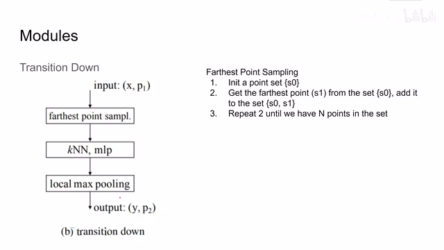
00:08:56–00:09:03 · 画面 01900:09:03–00:10:20 · 画面 020
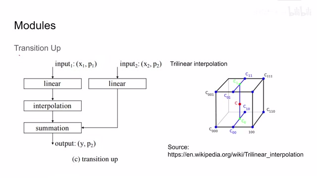
00:09:03–00:10:20 · 画面 020给它们变形然后呢我们要考虑因为 P1 是远远小于 P2 的我们要想个方法呢把这两个点级的容量给它统一起来都统一到 P2 那么对于 P1 来说呢我只要把原来没有的点都加进来可以了但是它对应的 X 它的 feature 怎么办呢这里呢作者说我们用这个 trilinear interpolation 也就是我在这个立体的空间中呢做这个线性的差布这样子呢就把我们原来只有 P1 个的 feature 呢给它插补到 P2 个 feature 上然后呢这里做了一个 summation 最后呢把这个结果输出出来了我们的点云呢就变成了 P2 个点然后呢它的对应的 feature 呢是 Y 这里呢它的原文没有说清楚但是呢它也没有代码我们也没法验证这个事情第一个呢就是我的 linear layer 这两个 linear layer 它是一样的吗那么第二个问题这个 summation 到底是什么样的操作呢
这个等一下我们给作者发一个邮件看看他怎么回复好的那么以上呢就是本文提出的网络的里面的每个模块还有它整体的结构我们直接看到作者汇报的结果吧那么这里呢作者评估了这个语义分割形状的分类识别然后还有物体的每一个零件的分割这也是一些漂亮的数字啊如果你感兴趣的话你可以去原文中仔细查看它的使用的数据集还有评价标准是什么意思那么我们其实更关心的是这个 ablation
00:10:20–00:10:23 · 画面 021
00:10:20–00:10:23 · 画面 02100:10:23–00:10:27 · 画面 022
00:10:23–00:10:27 · 画面 02200:10:27–00:10:34 · 画面 023
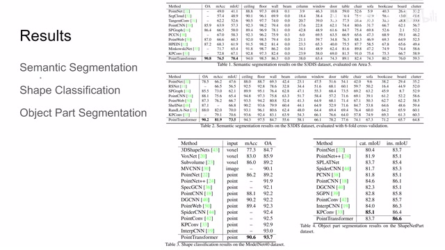
00:10:27–00:10:34 · 画面 02300:10:34–00:10:35 · 画面 024
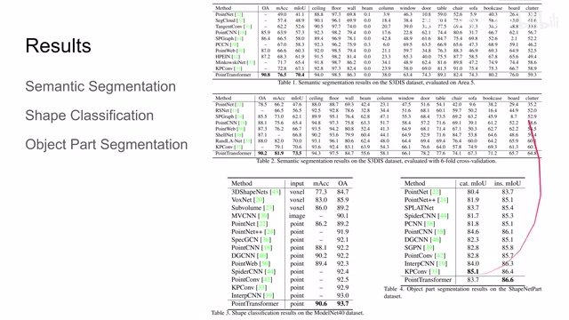
00:10:34–00:10:35 · 画面 02400:10:35–00:10:43 · 画面 025
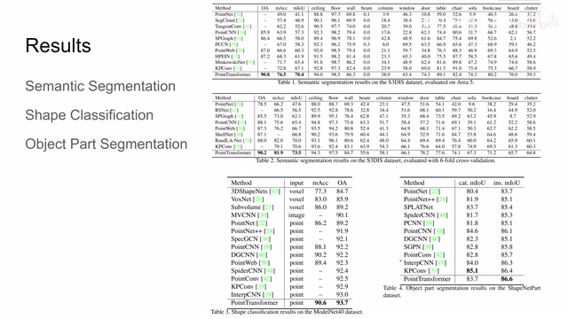
00:10:35–00:10:43 · 画面 02500:10:43–00:11:52 · 画面 026
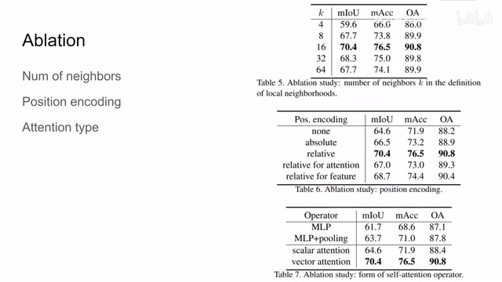
00:10:43–00:11:52 · 画面 026这里做这个测试的说，我在每次取铃接的时候取多少个铃区合适呢？最后呢，测出的是 16，这个值是比较好。然后呢，就是 position encoding。然后呢，就是 position encoding。我们没有 position encoding，使用绝对值，也就是直接拿坐标来使用 position encoding 来做差相对的这个 position encoding。还有呢，如果只给 attention 或者只给 feature，也就是 value 那一支加 position encoding，那效果会怎么样？
那最后呢，作者还测试了这个不同的 attention type，就是我左边求出来的 attention 呢是 scalar 还是 vector。那么显然呢，这个 vector 的 attention 它的效果呢明显的好于其他的这些没有 attention，包括 scalar 的 attention。但是 scalar 的 attention 呢依然 output 到 MLP 这些东西好的。那么总结来说呢，本文很巧妙的把我们的 self-attention 和 point cloud 点云数据呢结合起来，提出了一个给点云用的 transformer encoder，取得了相对不错的结果。
那么如果你对这篇论文感兴趣，还是非常推荐你阅读它的原文。那么以上就是我对这篇论文的简单的分析，感谢您的收看，再见。
00:11:52–00:11:52 · 画面 027
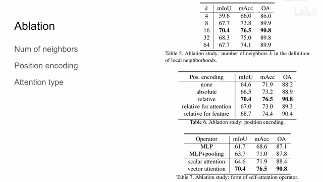
00:11:52–00:11:52 · 画面 027转写与来源说明 · 0 个自动复核提示
保留 26 个原始语音片段，0 个片段触发自动复核提示。提示仅用于定位可能的术语、重复或识别问题，不等于已确认错误。
讲解画面为源视频截图（640×360），不是可编辑 PPT 文件。全片按每秒 2 帧扫描内容变化，逐步展开页保留；连续动画保留代表画面。清晰度受源视频限制。
原视频：paper/合集_2026-10-16_新模型/[论文简析]Point Transformer[2012.09164].mp4
SHA-256：eb199726c71f597c18ef8a52aff85bd23d4898fbc0ac1709147702c6271f490c
全文按视频语音与画面制作。原论文可从上方链接下载；完整资料包保留全文、原始逐字稿、字幕和校对记录。